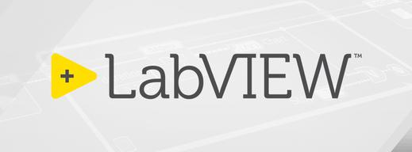
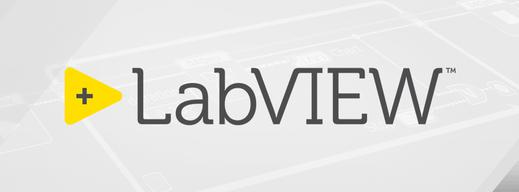

- Full stack development of Web and Desktop based applications.
- Angular based front-end applications.
- Created Angular framework libraries and custom web components for reuse across embedded, desktop, and web applications.
- Used KOA, Express architecture as REST API for Client-Server interface.
- Agile development environment with GIT, Jenkins, and Atlassian toolsets.


- Worked as a graduate research assistant at Aerospace, Transportation and Advanced Systems (ATAS) Laboratory under Dr. Alessio Medda.
- Developed Digital Signals Processing (DSP) algorithms and DSP software architecture on noise reduction, cross correlation, beamforming, etc.
- Worked with NI DAQs, DTS DAQs, LabVIEW, Signal Express, and Matlab for data gathering and coding.
 
